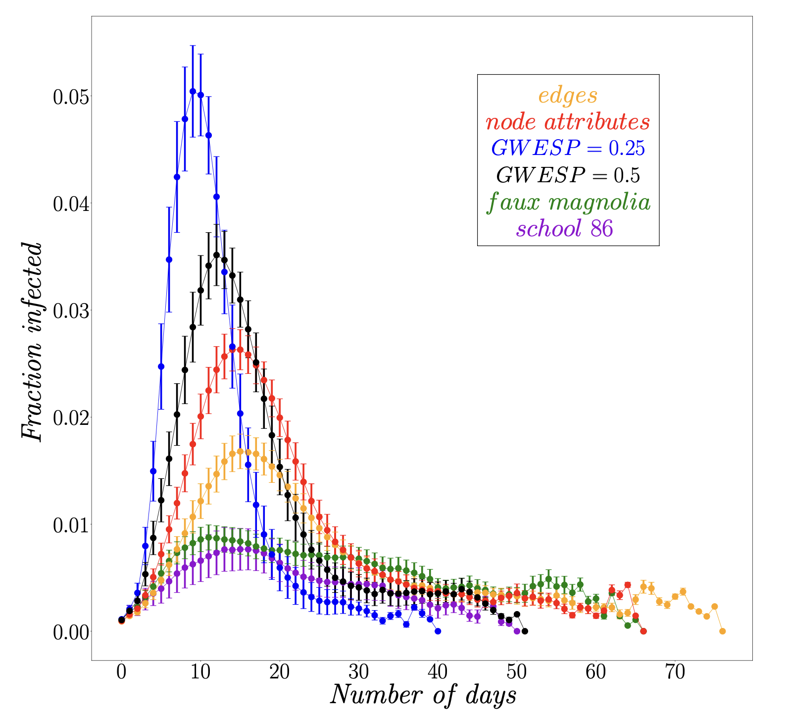
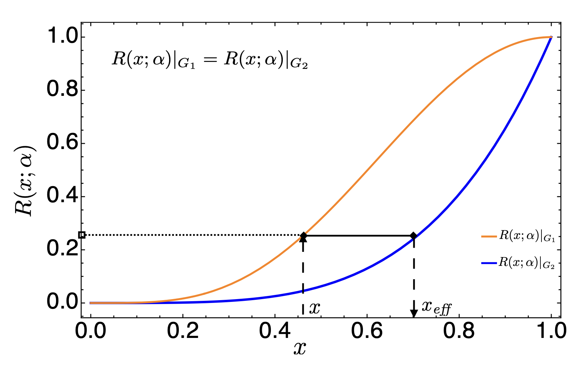

Epidemic & Trade Network Applications
Doctoral research, Virginia Tech, 2013–2018, supervised by Prof. Stephen Eubank. The theoretical foundation is Moore-Shannon network reliability — a polynomial that encodes both network structure and the dynamics of a process running on it. That framework is applied here to two systems — human contact networks and international food trade networks — where in both cases it reveals structure that standard methods miss.
Network Reliability: Theory & Computation → · Full dissertation ↗
SIR Dynamics on Contact Networks
Infectious diseases spread through contact networks — graphs in which each person is a node and each potential transmission route an edge. Under the SIR model, each person is susceptible \((S)\), infectious \((I)\), or recovered \((R)\), transmitting to each susceptible contact independently with probability \(x\). The central question is whether networks constructed to match observed local statistics also reproduce the epidemic dynamics observed on the real network — a question that matters directly for vaccination targeting and quarantine design.
\(R(x;\,\mathcal{G},D_\text{SIR},\mathcal{P}_N)\) gives the probability that infecting a single randomly chosen node leads to an outbreak involving at least \(N\) people, where \(x\) is the per-edge transmission probability. It is a finite-degree polynomial in \(x\) that captures both network topology and epidemic dynamics in a single quantity.
The observed network is school 86, drawn from Wave I of Add Health (the National Longitudinal Study of Adolescent to Adult Health) — two linked high schools with 1,460 students and 974 mutual friendship links. Exponential random graph models (ERGMs) are the controlled comparison: random networks constrained to match specified graph statistics, testing whether those statistics alone determine epidemic dynamics. Faux Magnolia — a synthetic network built from the same Add Health data — is the primary ERGM benchmark.
Computing \(R(x;\,\mathcal{G},D_\text{SIR},\mathcal{P}_N)\) for each network shows that school 86 is more resistant to large outbreaks than the ERGMs: at the same transmission probability, ERGMs overestimate infection counts by up to 50%. After re-calibrating all networks to the same epidemic potential, systematic differences in peak infection height and duration persist. A less constrained random network performs as well as Faux Magnolia — adding more constraints does not improve how the model reproduces epidemic dynamics, and can introduce structural artefacts. Degree distribution and clustering are not sufficient to characterise epidemic dynamics; observed contact network data is essential for effective public health planning.


Invasive Species Spread in Food Trade Networks
The same framework extends naturally to trade networks. The global food system creates pathways for invasive species to spread between countries through trade in agricultural commodities. This work applies Moore-Shannon network reliability to identify contagion clusters in international food trade — groups of countries with shared vulnerability, where a pest entering one country substantially increases the likelihood of spread to the others.
The case study is Tuta absoluta (South American tomato leafminer), an invasive pest that has spread from its native South America to most of Europe, Africa, and West, Central, and South Asia. Data comes from the FAO (Food and Agriculture Organization of the United Nations) Detailed Trade Matrices at country level, covering trade in Solanaceae crops — tomato, potato, eggplant, and pepper — for 2005–2013. Clusters are identified by iteratively removing trade edges in order of decreasing contribution to network reliability. The process stops when no group of mutually reachable countries exceeds a size threshold, ranking routes by their structural importance to contagion spread.
A stable European cluster — Portugal, Netherlands, Belgium, France, and Spain — appears across all years, with a distinct North American cluster (USA, Mexico, Canada) identified separately. The structure is robust across different transmission probabilities and discretisation thresholds, with forecasting precision reaching approximately 96%. As trade volumes grow between 2005 and 2013, clusters expand and fewer countries remain isolated from contagion risk. These clusters are the highest-priority targets for biosecurity surveillance: a pest entering any one country in a cluster is highly likely to reach the others within the same trade season.


Related Publications
- Mishra, R., Eubank, S., Nath, M., Amundsen, M. and Adiga, A. (2022) Community detection using Moore-Shannon network reliability: application to food networks, in International Conference on Complex Networks and Their Applications, Cham: Springer, pp. 271–282.
- Nath, M. et al. (2019) Using network reliability to understand international food trade dynamics, in Complex Networks VII, Cham: Springer, pp. 524–535.
- Nath, M., Ren, Y., Khorramzadeh, Y. and Eubank, S. (2018) Determining whether a class of random graphs is consistent with an observed contact network, Journal of Theoretical Biology, 440, pp. 121–132.